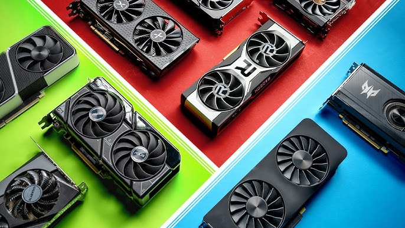

Choosing the Right GPU for Your Build
Choosing the right GPU is essential for gaming, creative work, and overall system performance. With options from NVIDIA, AMD, and Intel, it’s important to consider factors like VRAM, clock speeds, and ray tracing capabilities. Whether you're aiming for high frame rates in the latest games or smooth performance in professional applications, understanding the strengths of each brand and model will help you find the best fit for your build.

NVIDIA
NVIDIA's GPUs are known for their cutting-edge technology, including advanced ray tracing and AI-powered features like DLSS. They offer top-tier performance for gaming, creative work, and AI applications, making them a favorite among enthusiasts and professionals.
Read more
AMD
AMD’s Radeon GPUs provide strong performance at competitive prices, often featuring more VRAM for the cost. With technologies like FSR and Smart Access Memory, AMD cards deliver excellent value and seamless integration with Ryzen CPUs.
Read more
INTEL
Intel is the newest player in the GPU space, offering solid performance with competitive pricing. With AI-enhanced upscaling and strong support for modern gaming features, Intel Arc is an exciting option for budget-conscious builders and emerging tech enthusiasts.
Read more